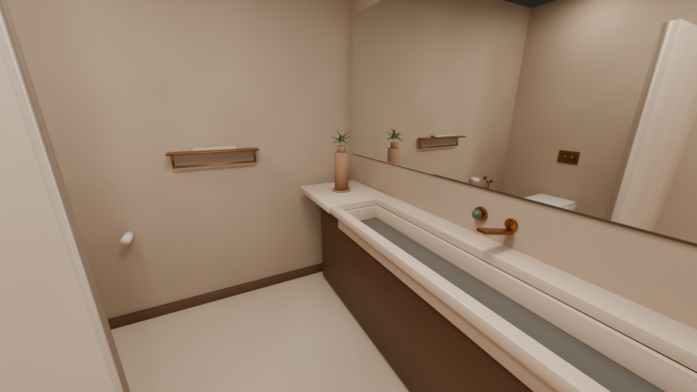
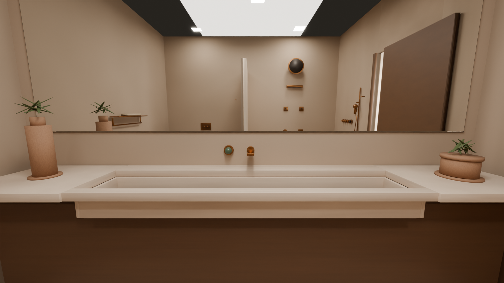
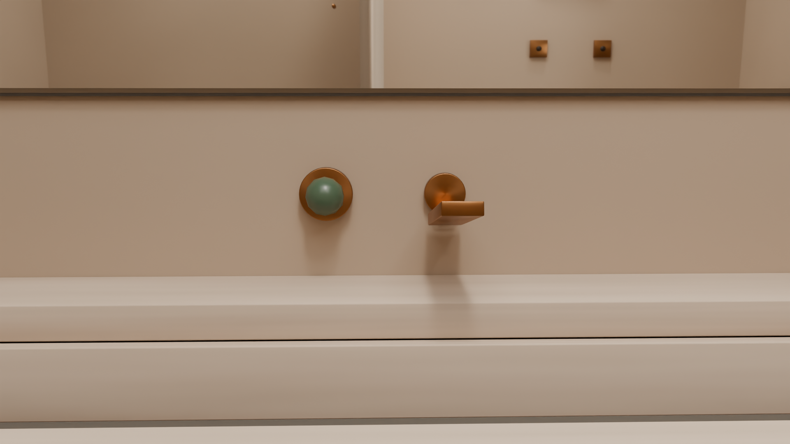
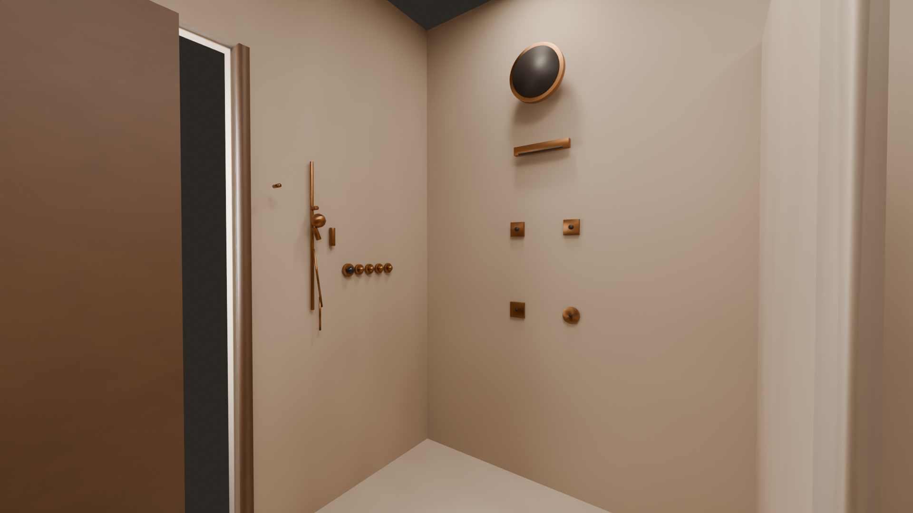
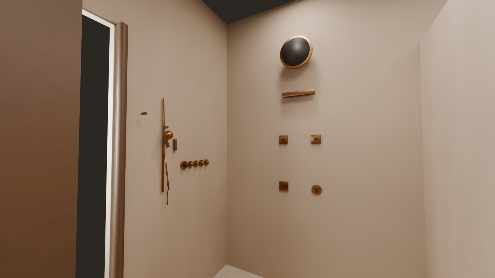
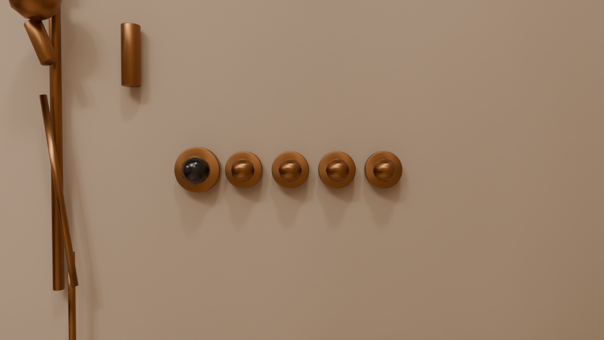
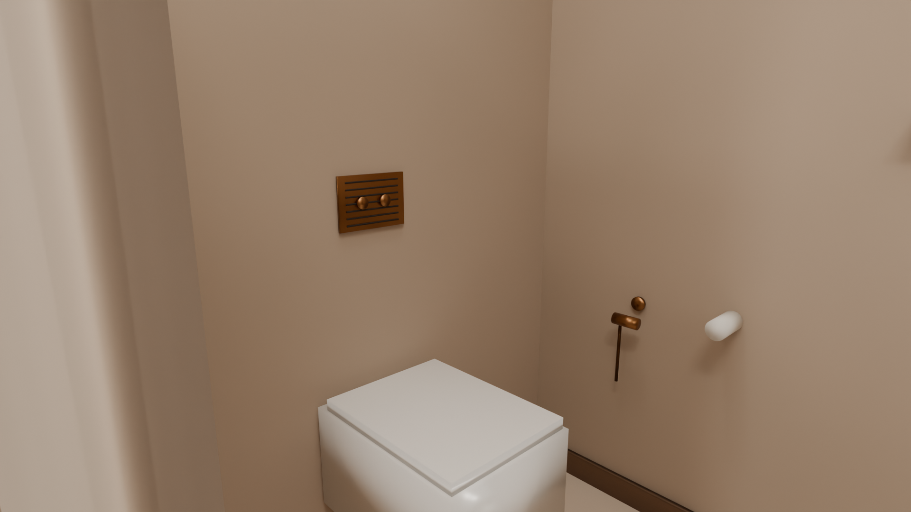
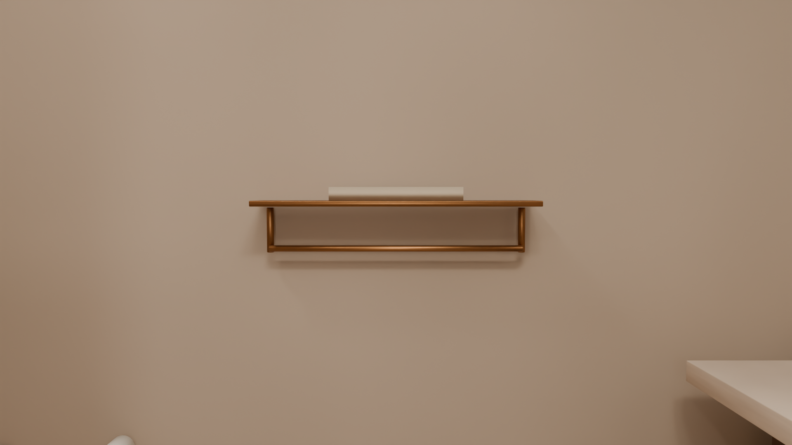
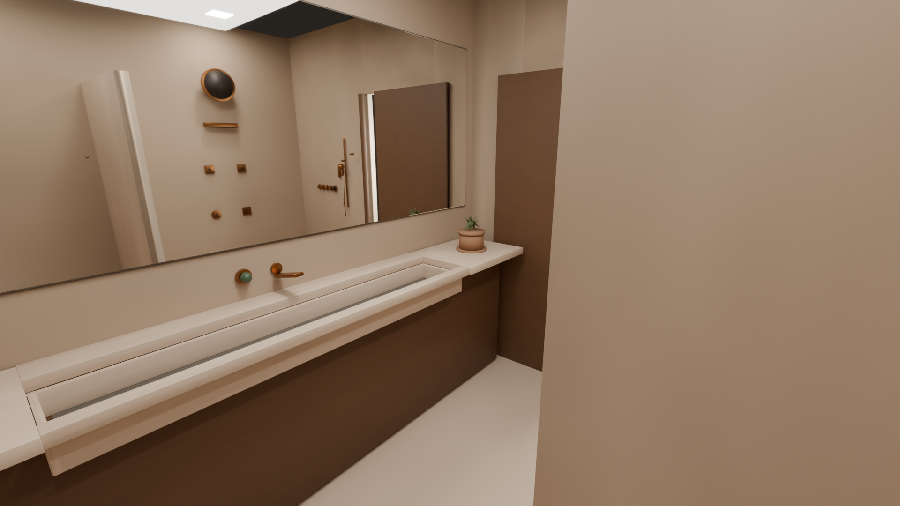
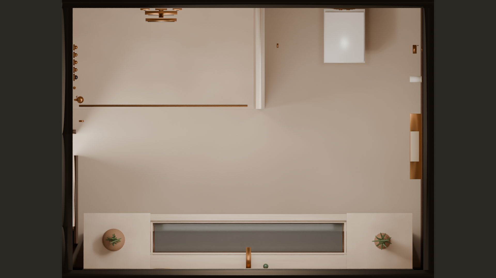

Room
| Item | Size and place |
|---|---|
| Clear room | 10 ft 8 in by 8 ft. Ceiling drawn at 9 ft 0 in. |
| Door from the dressing side | West wall. Opening starts 1 ft 4 in from the south corner. Clear opening 860 mm by 2100 mm. Smoked-oak leaf. |
| Floor and wet walls | Honed travertine, filled and sealed. |
| Dry walls and ceiling | Warm plaster. |
| Vanity | South wall. Smoked oak carcass. Stone top 900 mm above the floor, about 3.05 m long and 520 mm deep. |
| Trough | Integrated in the top, centred, 1.82 m long. Wall spout lands in the channel. Plants sit on the stone at both ends, outside the trough. |
| Mirror | Frameless, same width as the counter, with a warm backlight in the shadow gap and a demister. |
| Shower | North-west, open walk-in, 5 ft 6 in wide and about 3 ft 1 in deep. The WC alcove is shallower by the same 16 in. Curbless. Linear bronze drain at the entry. |
| WC | North-east alcove, divided from the shower by a travertine nib to 2.10 m. |
Fittings
Taken from the Gessi wishlist of 23 lines. One of each fitting is drawn. Where the list has two versions of the same thing, the second stays in the note and is not stacked on the wall. Finish 726 is Warm Bronze Brushed PVD, a coating, not bare brass. The wishlist prints no prices.
| Qty | Item | Article | Notes |
|---|---|---|---|
| 1 | Basin tap. Flat wall spout and pearl | 74588, finish 726 | On the trough. Spout projection 7-5/8 in, height 2-13/16 in, onyx-green pearl. Rough valve 09800. The same list also has the spout alone (74031), the onyx control alone (74547), an Emperador-dark control (74147), and a bath spout (74041). This room has no bath, so 74041 is not drawn. |
| 1 | Shower valve, four ways | 74636, finish 726 | West wall of the shower. Separate discs, one Murano pulegoso pearl. Thermostatic, four outlets at once. Rough valve 09288. Trim only. |
| 1 | Wall head, rain and spray | 57502, finish 726 | North wall, round, rainfall and spray. Needs fixing kit 01203. The same list also has 57506 in finish 727, Brass Brushed PVD, the rectangular rainfall and spray head. That one is a different colour, so it is not mounted next to this head. |
| 1 | Cascade | 57595, finish 726 | Curved wall cascade under the head. The list also has a square slot, 20295, and a 6 in shelf cascade, 20293. Those two are not drawn. |
| 1 set | Two square body sprays | 57572, finish 726 | Shoulder height, 300 mm apart, pivotable. Rough valve 09289. One set is two sprays. |
| 1 | Square nebulizer | 32979, finish 726 | Hip height, left of the round nebulizer. |
| 1 | Round nebulizer | 32977, finish 726 | Hip height, right. |
| 1 | Hand shower on a slide rail | 47351 and 59242, finish 726 | Three-jet hand shower on the adjustable rail, with the 59 in hose 01637. The list also has a second rail, 54045, and a black hose, 54137. Those are not drawn. 32929 is the slim wall outlet beside the rail. |
| 1 | Shelf with towel rail | 59407, finish 726 | East wall, dry side. 24 in shelf with a rail under it. |
| 1 | Flush plate, Rigato | 54671, finish 726 | Above the WC. Stainless plate, two round buttons, vertical lines, for the listed Geberit frames. The list also has the Diamantato plate, 54681, same size and buttons, diamond texture. That one is not drawn. Neither plate is confirmed for a TOTO frame. |
| 1 | Health faucet | Not on the wishlist | East wall of the WC alcove. Kept from the earlier room. No Gessi code on this list. |
| 2 | Hooks and paper | Not on the wishlist | The hook by the door, the hook in the WC, and the paper holder stay from the earlier room. No codes for them on this list. |
| 1 | Linear drain | Studio Ore 59, SKU 59-PB | Solid brass grate, unlacquered polished brass, flush with the floor. At the shower threshold. The first-fix body is included. |
Other brands
These are extra articles, not replacements for the row above unless you pick them. Each link is the product named.
| Item | Article | What it actually is |
|---|---|---|
| Shower tech | Gessi Meccanica massage head | Rain, spray, and massage, in brushed brass PVD 727. Brodware’s rose is one spray and stays off this line. |
| Ceiling, rain and waterfall | Jaquar Maze OHS-CHR-1649 | Two sprays: maze rain and cascade. 552 by 205 mm, wall mount. The linked page is chrome. Antique bronze is a listed finish, and it is a coating. |
| Ceiling, three sprays | Hansgrohe Rainfinity 250 3jet, 26232000 | PowderRain, Intense PowderRain, and RainStream. 250 mm. Chrome. RainStream is a sheet, and Hansgrohe does not call it a waterfall. |
| Ceiling, three sprays | AXOR ShowerHeaven 10637140 | PowderRain, Rain, and MonoRain. 1200 by 300 mm, ceiling. Brushed bronze is a coating. Basic set 10922180 is separate. |
| Body jets | Jaclo Sahara S090-ULB | All brass, unlacquered brass, one spray, brass ball joint. |
| Body jets | Studio Ore 99, SKU 99-V3-AJ-PB | Solid brass, unlacquered polished brass, 55 mm face, adjustable. The drawing shows the holes in the brass face. |
| Towel stand | Gessi Rettangolo 20939 | Plain rectangle in brass. Brushed brass is PVD code 727. Matches the square lines of the room. |
| Towel stand | Decor Walther STRAIGHT 2, 0504800 | Plain square-base stand, solid brass, two arms, 805 mm high. Sold in chrome, satin nickel, white, and matte black. Not brushed brass. |
| Shower hinges | Brodware 5.9097.19 in .23 | Wall to glass, 90 degrees, Brushed Brass Organic. The other three hinges are on the row above. |
| Linear drain | Studio Ore 59, SKU 59-PB | Solid brass grate, unlacquered polished brass, flush floor. |
| Square drain | Studio Ore 58 | Square solid-brass shower drain, same finish family as the linear grate. |
| Shower valve | Studio Ore 141 | Triple thermostat with a two-way diverter, solid brass, unlacquered finishes. This is not a three-outlet valve. |
Ceramic and stone that are not the bronze
| Qty | Item | Article | Notes |
|---|---|---|---|
| 1 | TOTO RP wall-hung WC, CW554MUNW1 | TOTO India, CW554MUNW1 / TC613IN | Rimless, Tornado flush, Cefiontect. 380 by 490 by 332 mm. No price on that page. |
| 1 | Soft-close seat TC613IN | Same TOTO page as the pan. | Sold with the pan on the India site. |
| 1 | In-wall frame and cistern | Not on the pan page. | TOTO frame, or the plumber’s usual in-wall frame. Service opening behind the plate. |
| 1 | Travertine trough and counter | Custom. Filled, honed, sealed. Waste at the low point. | |
| 1 | Low clay pot on a saucer | Left end of the counter. | |
| 1 | Taller unglazed vase on a saucer | Right end of the counter. |
Budget
Price is not the filter. An article is listed when it is the real product. Tiles and civil work sit outside the fittings. There is still no landed total.
| What is public | Price on 1 Oct 2026 |
|---|---|
| Gessi wishlist, 23 lines, 2 Oct 2026. The fittings drawn in the room. | Every line prints a blank price. No total is made up. |
| TOTO RP CW554MUNW1 with seat TC613IN | Listed on the TOTO India site. No price is printed there. |
Where a page prints a price, it is shown above. No landed total is added up. Rate used where a conversion is shown: Financial Times AUDINR 66.90 on 1 Oct 2026.
Finish 726 is a PVD coating. The rough valves on the wishlist go in before the wall is closed. The pictures are a massing of those articles, not factory CAD.
Blender file: bathroom.blend. Renders were made in Cycles on an RTX 4050 with OptiX.